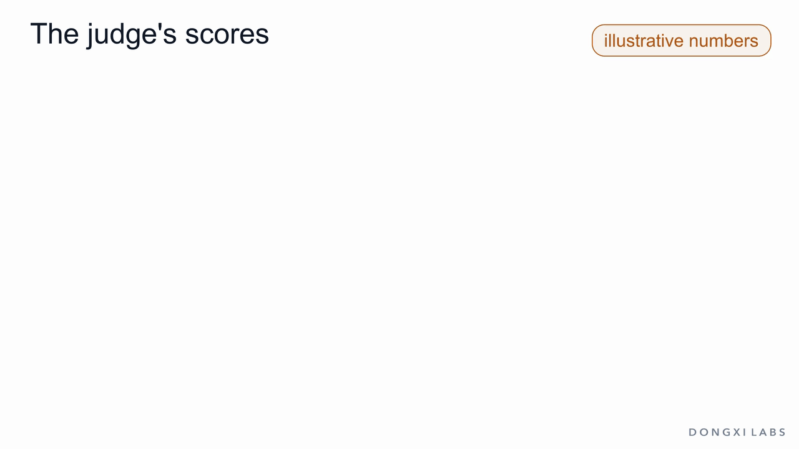
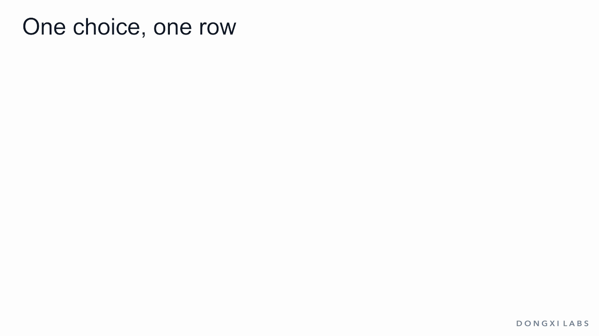
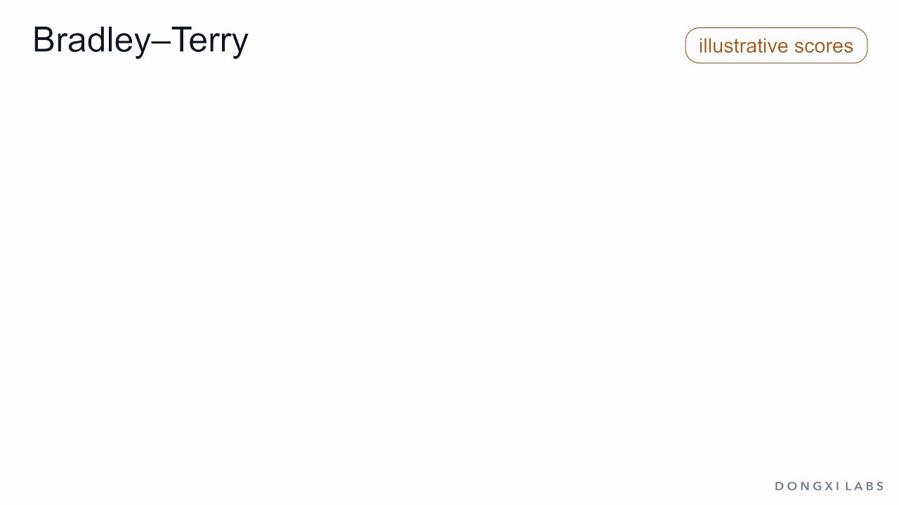
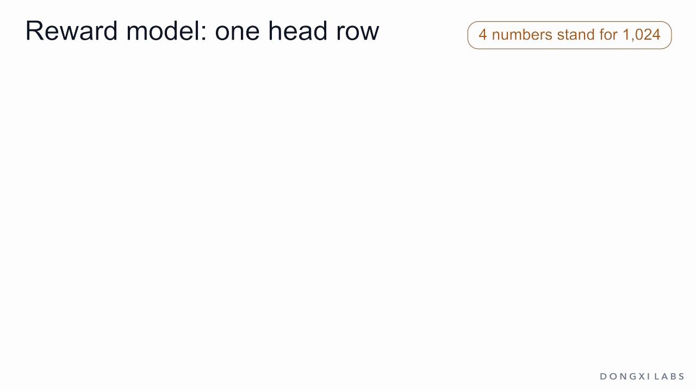
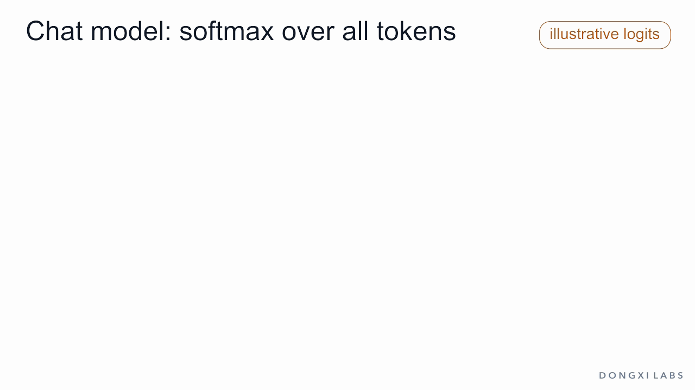
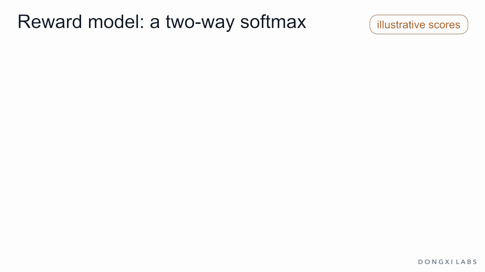
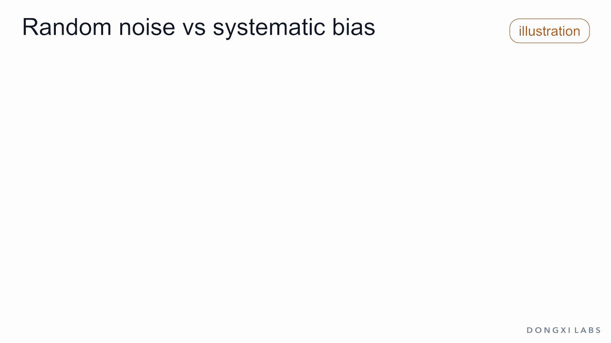
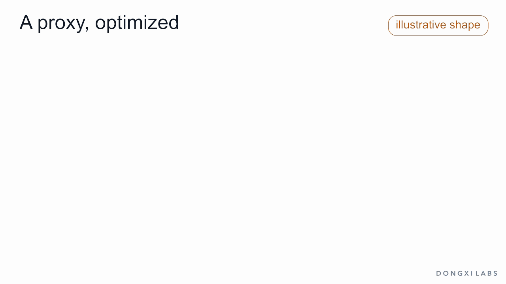

One choice, one row
In the previous article, a judge read finished answers to Is OpenAI open? and gave each one a score. OpenAI is open. It's in the name. got 2. Answers that began with partly got 8 or 10. Reinforcement learning (RL) then used those scores to change the model. The figure recalls that scene: ten sampled answers land at the judge's scores; the answers that start with open score low, and the two partly answers score 10 and 8.

One question was left open: where does such a score come from?
In RL from human feedback (RLHF), the judge is a reward model: a neural network that reads a prompt and an answer and returns one number. Nobody writes these numbers by hand. People supply choices. An annotator sees the prompt and two answers:
- A: Partly. Some weights are open.
- B: Yes. OpenAI is open. It's in the name.
As of this writing, A is the accurate one: OpenAI has released open-weight models, gpt-oss-120b and gpt-oss-20b, under the Apache 2.0 license, while its flagship models are available only through its API and apps. The annotator picks A. The choice is stored as one row of data: the prompt, the chosen answer and the rejected answer. Thousands of such rows, over thousands of prompts, are the training set of a reward model.

This article follows that row from the click to the number:
- how a choice becomes a loss;
- how the loss changes the network;
- what the network looks like;
- what it learns along the way.
It is the fifth article in our post-training series.
A reward model never sees a score from a person. It sees which of two answers was chosen, and it has to find scores that explain those choices.
Compare, do not grade
A grade, such as 7 out of 10, needs a scale that every annotator applies the same way, and people do not share one: one annotator's 7 is another's 5. A choice between two answers needs no scale. It also asks less of the annotator. A preference judgment requires no knowledge of how to write the answer, only an opinion about the result. Someone who could not explain OpenAI's licenses can still see that A is more accurate than B.
Preference data takes several forms:
- pick the better of two answers;
- pick the best of N;
- rank N answers.
A ranking of N answers yields N(N − 1)/2 pairs. InstructGPT's annotators ranked 4 to 9 answers per prompt. The labels come from trained annotators, from votes on sites such as Reddit and StackExchange, or from a strong LLM asked to compare: UltraFeedback used GPT-4.
Choices are still noisy. Annotators disagree on close pairs, misclick and tire. InstructGPT's labelers agreed with each other on about 73% of comparisons. That agreement caps what a reward model can reach: if people agree on about three pairs in four, no model can predict held-out choices much more often than that.
Bradley–Terry: a score gap becomes a probability
The data says A was chosen over B. Training needs numbers. The Bradley–Terry model, from 1952, connects the two. Give every answer a score, and let the probability that A is preferred depend only on the gap between the two scores:
P(A preferred to B) = σ(s_A − s_B) = 1 / (1 + e^−(s_A − s_B))
σ is the sigmoid. It turns any gap into a probability between 0 and 1:
- gap −2 → 0.12
- gap 0 → 0.50
- gap 1 → 0.73
- gap 3 → 0.95
Three properties follow.
- Only the gap matters. Scores of 2 and 1 give the same 0.73 as 102 and 101. A single score means nothing on its own. It means something only next to the score of another answer to the same prompt.
- The probability is never exactly 0 or 1. Even a much better answer is sometimes passed over, as happens with real annotators.
- Scores can be read back from choices. Suppose 10 people compare A and B, and 7 pick A. The gap that best explains 7 out of 10 is the one with σ(gap) = 0.7, which is log(7/3) ≈ 0.85. Chess ratings use the same idea: Elo turns a rating gap into an expected score with the same S-shaped curve.

A reward model is a network r(x, y) that gives the score of answer y to prompt x. Training asks one question: what probability does the model give to the choice the annotator made? With A chosen, that probability is σ(r_A − r_B), and the loss is its negative logarithm:
L = −log σ(r(x, chosen) − r(x, rejected))
This is cross-entropy, the loss that trains next-token prediction. There it is −log of the probability given to the actual next token; here it is −log of the probability given to the actual choice. A gap of −1 gives a loss of 1.31, a gap of 0 gives 0.69, 1 gives 0.31, and 3 gives 0.05. The loss can be computed for every labeled pair, whether the model currently ranks it right or wrong.
The model makes three assumptions:
- All answers sit on one scale, so preferences that run in a circle (A over B, B over C, C over A) cannot be represented.
- There are no ties.
- All annotators share one standard.
Lowering the loss: gradient descent
The loss says how wrong the model is. Gradient descent makes it smaller. For each weight, the gradient says how much the loss would rise if that weight rose a little. Moving every weight a small step against its gradient lowers the loss:
w ← w − lr · ∇L
The learning rate lr sets the step size.
Take the smallest reward model that still shows the mechanism: a scorer with two weights that reads two features of an answer.
- Feature 1 is 1 when the answer states the facts.
- Feature 2 is 1 when it argues from the name.
So A has features (1, 0) and B has (0, 1). The score is w · f, the weights times the features, summed. For the Bradley–Terry loss the gradient is
∇L = −(1 − σ(gap)) · (f_A − f_B)
The factor 1 − σ(gap) is the size of the push. Start from w = (0, 0) with lr = 1:
- Step 1. Both scores are 0, the gap is 0, σ = 0.5 and the loss is 0.693. The push is 0.5 and f_A − f_B = (1, −1), so w becomes (0.5, −0.5). Stating the facts now adds to the score, and arguing from the name subtracts.
- Step 2. A scores 0.5 and B scores −0.5. The gap is 1.0, σ = 0.731 and the loss is 0.313. The push is 0.269, smaller, because the pair is already mostly right.

Each step raises the chosen answer's score and lowers the rejected answer's score by the same amount. Across many pairs, most of the training effort goes to the pairs the model still gets wrong.
The push 1 − σ(gap) is large when the model ranks a pair wrong, and small once it ranks the pair right with a clear margin.
A real reward model has hundreds of millions of weights instead of two, and the rule is the same. The next sections show what those weights are.
Same body, one head row
A reward model starts from an existing LLM, usually a checkpoint of the chat model it will judge, before or after instruction tuning. It keeps the body, the embedding table and the transformer layers, and replaces the last layer.
Take Qwen3-0.6B, a small open model. Both models share the same body: it turns each token into a vector of 1,024 numbers and passes the vectors through 28 layers. Only the last layer differs.
Follow the numbers through. Four numbers stand in for 1,024, and the vectors are illustrative. The text is tokenized into IDs, each ID selects one vector, and the vectors pass through the layers. The output at the last position is the final hidden vector h. Here, for the prompt, h = (0.5, −1, 2, 0).
Chat model: the LM head. The chat model ends in the LM head, a table of 151,936 rows, one per vocabulary entry, each a row of 1,024 numbers. Each row is multiplied with h, number by number, and the products are summed: a dot product. The row for Part gives 2.0, the row for Yes gives 1.0, the row for No gives −1.0, and so on for all 151,936 rows. These numbers are the logits. Softmax turns them into probabilities, one token ID is picked, the detokenizer turns that ID into text, and the loop runs again for the next token.

Reward model: the score head. The reward model removes the LM head and adds a score head: one row of 1,024 numbers, initialized at random. The text is now the prompt plus answer A, and suppose its h is the same (0.5, −1, 2, 0). Multiplied with the single row w = (1, −0.5, 0.5, 2), it gives 0.5 + 0.5 + 1 + 0 = 2.0. That number is A's score. Answer B goes through on its own pass, ends at h = (1, 0, 0, 0), and scores 1.0.

Every logit is one dot product: the final hidden vector times one row of the head. The chat model's head has 151,936 rows. The reward model's head has one, and its one logit is the score.
Nothing comes after the score. It goes to RL as the reward, unchanged, with no softmax, no token and no detokenizer. The reward model cannot write text, because it has no vocabulary to choose from. It needs no instruction such as rate this answer, because the output layer defines its task. Even before training, it outputs a number for any text, because one row always produces one number. That number means nothing until training sets the weights.
Which position gives the score
The score head runs at every position, as the LM head gives 151,936 logits at every position. A conversation of 40 tokens gives 40 numbers. The reward is the number at the last real token, the end-of-turn token <|im_end|> that closes the answer. The other numbers are discarded.
The last position is used because attention in an LLM is causal: the vector at position t is computed from tokens 1 to t only. Compare two answers that differ in one word:
- Partly. Some weights are open.
- Partly. All weights are open.
In Qwen3's tokenizer both answers are 8 tokens, and they differ only at Some and All. Before that token, the two runs produce identical vectors and identical numbers. From that token to the end, they differ. Only the last position has read the whole prompt and the whole answer, so only it can score the answer as a whole. The first position would give every answer the same number.

Training runs answers in batches, and shorter rows are filled with padding tokens to a common length. The code must read the score at the last real token, never at the padding.
Logits and softmax: chat model vs reward model
Chat models also produce logits and turn them into probabilities with softmax. The two kinds of logit are related, because Bradley–Terry is itself a softmax over two items:
σ(a − b) = e^a / (e^a + e^b)
The left side is the sigmoid of the gap. The right side is the softmax of two scores, read at the first one. Here are the two models with the numbers from above.
Chat model: a softmax over the vocabulary. For the first token of the answer, the logits Part 2.0, Yes 1.0 and No −1.0 give 0.705, 0.259 and 0.035 under a softmax over these three. In the real model the softmax runs over all 151,936 entries and gives real probabilities of the next token, summing to 1. The model samples from them to write text. In training, the loss is −log of the probability given to the actual next token.

Reward model: a softmax over two answers. A and B each take a pass and get one score: 2.0 and 1.0. A softmax over the two gives 0.731 and 0.269, which is σ(1). This softmax exists only inside the training loss: −log of the probability given to the chosen answer, A. In use there is no softmax: the raw score 2.0 is the reward.

Side by side, the two models differ in what competes, and when the softmax runs:
- Candidates. The chat model's 151,936 logits come from one pass and compete inside one vector. The reward model's scores come from separate passes, one per answer, and compete only when they are compared.
- Meaning. The chat model's softmax gives real probabilities over the next token. One reward score alone means nothing: only gaps between answers to the same prompt do.
- Use. The chat model samples from its softmax to write text. The reward model's softmax is for training only; in use, the raw score is the output.
- Loss. Both train with −log softmax(correct option). For the chat model the correct option is the actual next token; for the reward model it is the answer the annotator chose.
A reward model is trained with the same cross-entropy loss as a chat model, over two answers instead of 151,936 tokens.
For rankings of more than two answers, the Plackett–Luce model extends the same idea. A softmax over all K answers gives first place, a softmax over the remaining answers gives second place, and so on.
Training the whole network
Training the real network applies the two-weight rule to all the weights: about 596 million for Qwen3-0.6B, the body and the new head together.
- Each step takes a small batch of rows. The chosen and the rejected answer of each row pass through the same network, which gives two scores per row.
- The loss is the Bradley–Terry loss, averaged over the batch.
- Backpropagation computes the gradient for every weight, through the head and back through all 28 layers.
- An optimizer, usually AdamW, updates the weights.
This is ordinary supervised learning, the same machinery as pretraining and instruction tuning: fixed data and a loss that can be differentiated. No reinforcement learning is involved. RL enters later, when the chat model is trained against the reward model.
InstructGPT trained its reward model for a single epoch, because further passes over the same comparisons overfit. Accuracy on held-out pairs stays well below 100%, since annotator disagreement sets the ceiling. InstructGPT's reward model predicted the choices of labelers it had not trained on about 70% of the time. Llama 2's two reward models reached 63% and 65% on their own test sets, and 81% and 94% on the pairs annotators had marked as clearly different.
After training, the reward model is frozen. From then on it only scores.
What it learns besides quality
A reward model learns whatever predicts the choices in its data. Most of that is intended: accurate, relevant, clear answers win. Some of it is not. Label errors come in two kinds, with different effects.
Random noise. Annotators misclick, or decide close pairs by chance. These errors favour no feature. Sometimes the better answer loses, sometimes the worse one wins. Over many pairs they cancel in the gradient. The model keeps the right order and its score gaps shrink: it becomes less confident than the true preferences justify.
Systematic bias. Suppose some annotators prefer the confident Yes. OpenAI is open. over the careful Partly. Or they prefer longer answers, or answers that agree with the user. These errors point the same way every time. They add up in the gradient, and the bias becomes part of the reward. More data of the same kind does not remove it.

Both kinds appear in practice. In a study of RLHF in several settings, most of the reward the chat model gained in two of them came from writing longer answers. In another study, humans and reward models sometimes preferred a convincingly written answer that agreed with the user's mistaken belief to a correct one.
A reward model is therefore a proxy for what people want, learned from what they chose. The proxy matters most when something is optimized against it. A chat model trained to raise the score finds the places where score and quality diverge, such as longer or more flattering answers. This is reward hacking, which the previous article met as the flattering answer. Gao et al. measured it, with a larger reward model standing in for human judgment: as a policy is optimized harder against a smaller reward model, that model's score keeps rising, while the larger model's score rises, peaks and falls.

A reward model learns what the annotators chose, habits included. Optimizing hard against it finds its errors.
Where it is used
A trained reward model scores any prompt and answer, including answers no annotator has seen. It has three common uses:
- RLHF. The chat model writes answers, the frozen reward model scores them, and RL raises the probability of high-scoring answers. A KL penalty keeps the chat model near its starting point, where the reward model is reliable. This is the judge of the previous article.
- Labeling. The reward model compares new answers and produces new preference pairs, without new annotation.
- Best-of-n. Sample several answers and keep the highest-scoring one. The same ranking can select data for instruction tuning.

A later article in this series covers the other side: how the chat model is trained against the reward model with PPO and GRPO, and how DPO learns from the same preference pairs without training a separate reward model.
Summary
- A reward model learns from choices: rows of a prompt, a chosen answer and a rejected answer. Nobody writes scores.
- Bradley–Terry turns a score gap into a probability, σ(r_chosen − r_rejected). Only gaps carry meaning, and the loss −log σ(gap) is cross-entropy on the annotator's choice.
- Gradient descent lowers that loss, w ← w − lr · ∇L. The push 1 − σ(gap) raises the chosen score and lowers the rejected one, most on pairs still ranked wrong.
- Every logit is the final hidden vector times one row of the head. The chat model has 151,936 rows; the reward model has one, and its one logit is the score.
- The score is read at the last real token, the only position that has read the whole answer.
- Bradley–Terry is a softmax over the two compared answers. Chat model and reward model train with the same loss, −log softmax(correct option).
- Training is supervised: backpropagation and AdamW on all the weights, with no RL.
- Random label noise lowers confidence. Systematic bias becomes part of the reward. The reward model is a proxy, and optimizing hard against it exposes its errors.